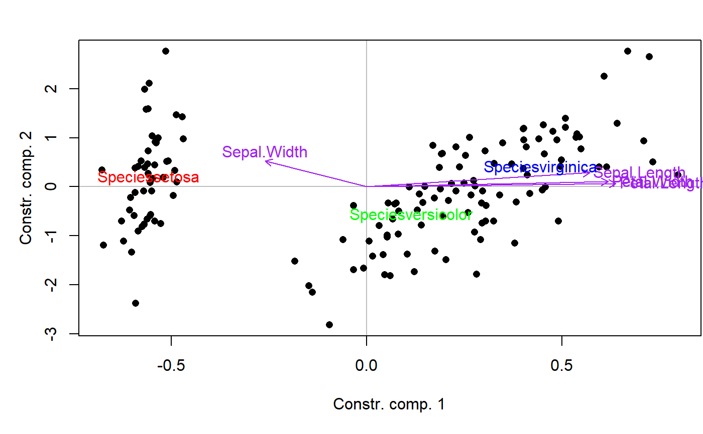

MVA.biplot.RdDisplays a biplot of a multivariate analysis. This just consists in superimposing a score plot and a correlation circle (plus centroids of factor levels in constrained analyses, RDA or CCA). The correlation circle is adjusted to fit the size of the score plot.
MVA.biplot(x, xax = 1, yax = 2, scaling = 2, sco.set = c(12, 1, 2), cor.set = c(12, 1, 2), space = 1, ratio = 0.9, weights = 1, constraints = c("nf", "n", "f", NULL), sco.args = list(), cor.args = list(), f.col = 1, f.cex = 1)
| x | a multivariate analysis (see Details). |
|---|---|
| xax | the horizontal axis. |
| yax | the vertical axis. |
| scaling | type of scaling (see |
| sco.set | scores to be displayed, when several sets are available (see |
| cor.set | correlations to be displayed, when several sets are available (see |
| space | space to use, when several are available (see |
| ratio | constant for adjustement of correlations to the size of the score plot ( |
| weights | only used with constrained analyses (RDA or CCA) where some constraints are factors. Individual weights, used to calculate barycenter positions. |
| constraints | only used with constrained analyses (RDA or CCA). Type of constraints to display: quantitative ( |
| sco.args | list containing optional arguments to pass to |
| cor.args | list containing optional arguments to pass to |
| f.col | color(s) used for barycenters in case of a constraint analysis (RDA or CCA) containing factor constraint(s). Can be a unique value, a vector giving one color per constraint or a vector giving one color per barycenter (all factors confounded). |
| f.cex | size(s) used for barycenters in case of a constraint analysis (RDA or CCA) containing factor constraint(s). Can be a unique value, a vector giving one size per constraint or a vector giving one size per barycenter (all factors confounded). |
This function should not be use directly. Prefer the general MVA.plot, to which all arguments can be passed.
All multivariate analyses covered by MVA.corplot can be used for biplots.
require(vegan) data(iris) RDA <- rda(iris[,1:4]~Species,data=iris) MVA.plot(RDA,"biplot",cor.args=list(col="purple"),ratio=0.8,f.col=c("red","green","blue"))